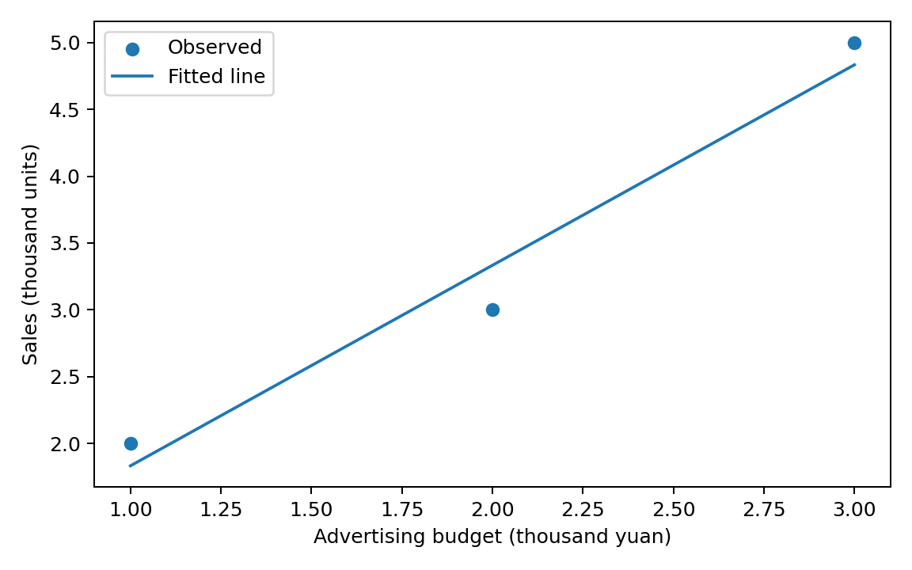

代码 3.1.1-08 · 画出观测点与拟合直线
按编号顺序运行，后面的代码依赖前面定义的变量。本章使用虚构教学数据，范围截止斜率置信区间。
逐步读代码
Path管理文件路径；Path("图片")表示工作目录下的图片文件夹。mkdir(exist_ok=True)是路径对象的方法，创建目录，目录已存在时允许继续。请在第三章 Notebook 所在目录运行。plt.subplots创建整张画布fig和绘图区域ax；figsize以英寸指定宽和高。尺寸是可复用的显示设置，不需要背诵。scatter(x, y)画实际观测点；plot(x, y_fit)依输入顺序连接拟合值。本例x已从小到大排列，且拟合值位于同一直线上；实际销量连起来并不等于拟合直线。label为图例提供名称；set_xlabel、set_ylabel设置坐标轴标题和单位；legend()显示图例。这里使用默认颜色，不需要记忆颜色编码。tight_layout()调整边距；路径对象之间的/拼接文件路径。savefig保存 PNG 和矢量 PDF，dpi=180设置 PNG 分辨率。display(fig)在 Notebook 中显示图片，plt.close(fig)关闭后台画布以避免重复显示，已保存的图片和已经显示的输出仍保留。
实际运行图形
